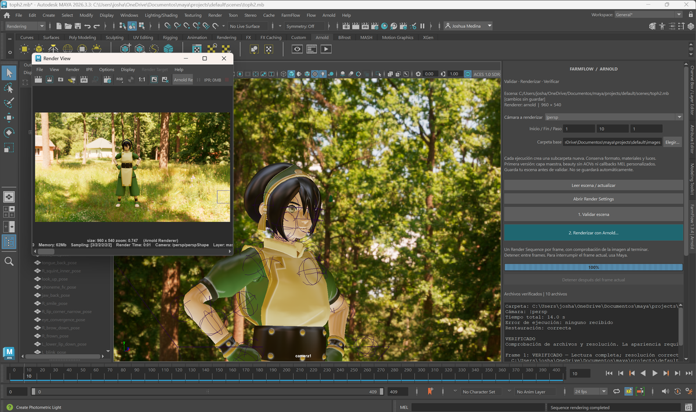
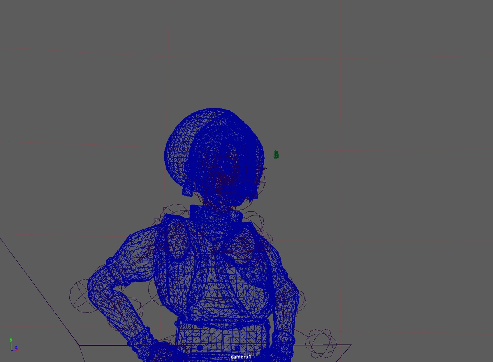

Extract without changing
DCC adapters translate Maya or Houdini scene data into neutral models. The core can then validate most rules in standard Python without importing a DCC.
LIGHTING TD PIPELINE
Check a Maya scene, render an Arnold sequence and verify its EXR outputs in one traceable workflow.
My contribution Python development · Maya integration · render workflow

Independent pipeline engineering project · version 1.9.0 · August–September 2026
/ OVERVIEW
A scene can work on an artist's workstation and still fail elsewhere because of missing textures, local paths, incomplete sequences, the wrong camera, unsupported render layers, incompatible Arnold settings or unexpected output names. FarmFlow turns those conditions into explicit checks before render time is spent. It is designed for a lighting artist preparing a render and for the technical person investigating a failed output.
The project evolved from a neutral Python architecture into a working Maya plug-in and dockable panel. It reads the scene without silently repairing it, blocks critical errors, renders Arnold sequences one frame at a time, verifies the generated EXRs and records diagnostics that can be inspected later.
/ IN MAYA
These production captures show the same test scene moving through FarmFlow inside Maya 2026: from scene inspection to Arnold output and sequence verification.
ARNOLD BEAUTY
The cleaned display conversion of frame 1 from the original ACEScg EXR.

SCENE INPUT
The Maya test scene before FarmFlow validation and Arnold execution.
RENDER EXECUTION
FarmFlow drives Arnold, checks the resulting file and reports restoration of the Maya scene state.

SEQUENCE RESULT
The completed camera sequence with the render view and local execution history visible in Maya.
DCC adapters translate Maya or Houdini scene data into neutral models. The core can then validate most rules in standard Python without importing a DCC.
FarmFlow applies the temporary settings required for a selected frame, camera and layer, calls Arnold, verifies the output and restores the previous Maya state even after cancellation or failure.
Results record timings, scene snapshots, probable causes and suggested actions. EXRs and JSON reports remain connected to the frame and execution that produced them.
/ VERIFIED RESULTS
Source: the version 1.9.0 project report, 9 September 2026. It records 753 passing tests and two skipped tests that require a real Qube environment. The documented Maya 2026 acceptance run rendered and verified frames 1–10 with Arnold in 29.7 seconds, reported no execution error and restored the scene state correctly. This timing describes that local ten-frame test scene, not general farm throughput; the portfolio does not rerun the tool’s tests.
/ PRODUCTION DESIGN
Errors block execution; warnings remain visible for an informed decision. FarmFlow reports the rule, evidence and a suggested correction without modifying the scene.
Each frame is rendered and checked before the sequence continues. Real output paths reported by Maya are used instead of relying only on expected filename patterns.
Flat render folders, manifests, job state, Arnold statistics, OCIO context and light-group data prepare the result for queueing, diagnosis and compositing.
/ VALIDATION SCOPE
Installation, plug-in loading, preflight, camera selection, Arnold sequence rendering, EXR checks, light-group assignment and state restoration.
Persistent local jobs, per-frame work, priority, retries, cancellation and the Qube adapter were exercised without contacting a real Supervisor.
Real Qube submission, native Nuke acceptance, Linux, multi-host scale and final visual OCIO/light-group review require the corresponding licensed environment.
Project architecture, development, Maya integration, testing and documentation: Joshua Medina.
The character scene is test input for the workflow. Character modelling and source-asset creation are outside the contribution documented here.
FarmFlow version 1.9.0 is documented for Maya 2026 and Arnold. Results and limitations shown here follow the project's technical report dated 9 September 2026.
Get in touch about lighting, compositing, technical art or pipeline opportunities.
Joshalexmedina@hotmail.com